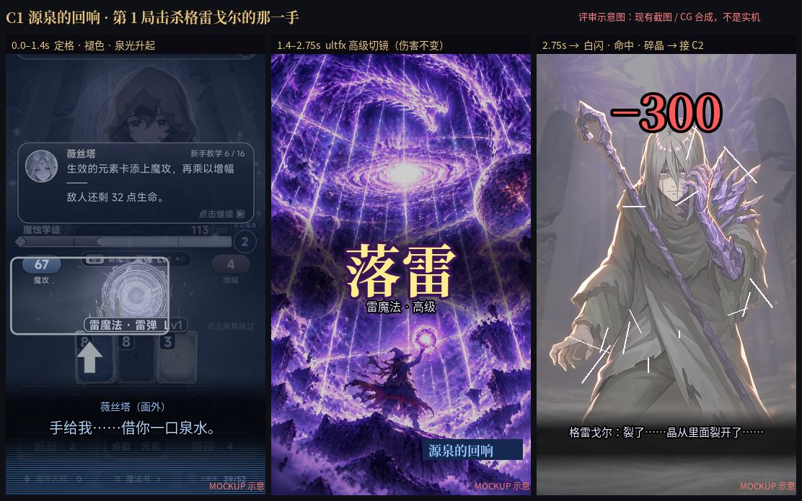
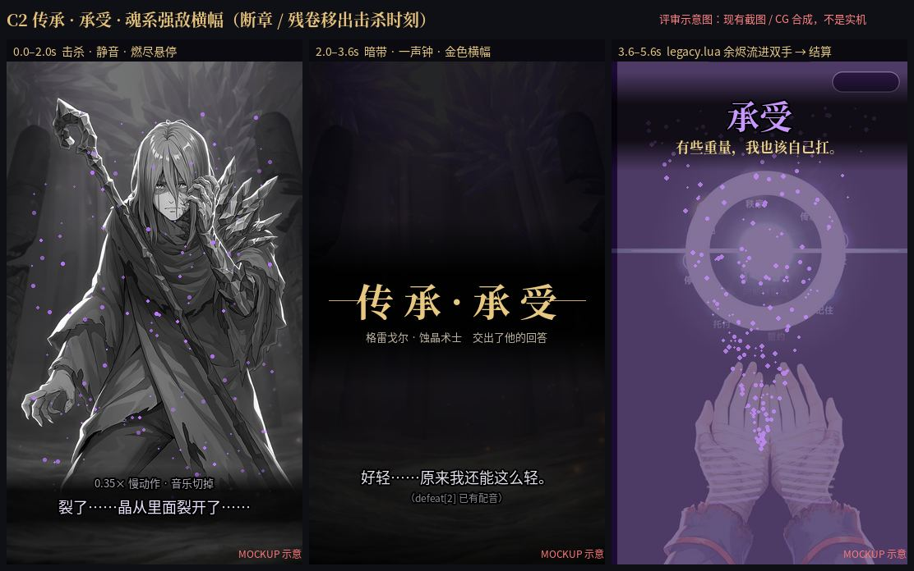
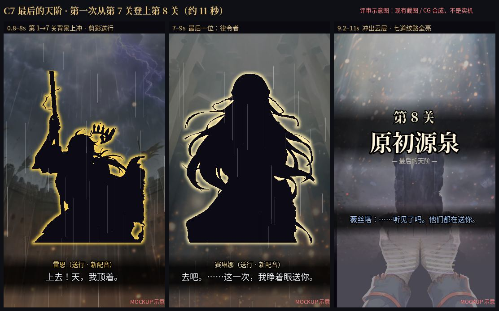

《手搓魔法》剧情高潮与爽点设计
诊断一句话：现在的高潮大多是看来的（CG、断章），很少是挣来的。赢下一场的那一帧往往最安静，几秒后又弹出一大段字。开头 1 小时、第 7 → 8 关、终战二阶段是三段最平的地方。
方案：11 个明确的高潮 / 爽点，分小爽 / 中爽 / 大高潮三级，全部由玩家的一次操作触发；新美术为零，只复用现有禁咒 CG、关卡背景、守关者原图、开场 i4 和现成配音，新增约 19 句配音。爽点来自三种反差：静 → 响，拦 → 送，小 → 大。
1. 情绪曲线：现在 vs 改后
表格视图
| # | 节点 | 现在 | 改后 | 改动 |
|---|---|---|---|---|
| 1 | 开场 CG | 5 | 5 | — |
| 2 | 第一次施放 | 2 | 3 | FTUE 修复 |
| 3 | 第一次击杀守关者 | 4 | 8 | C1 + C2 |
| 4 | 倒下 · 唤醒 | 4 | 5 | C2 合并后营地更清爽 |
| 5 | 第 2–3 局 | 1 | 4 | C3 最远的一世 · C5 破万 |
| 6 | 首到第 3 关 | 5 | 6 | C3 第二幕 |
| 7 | 击败菲奥娜 | 4 | 7 | C6 记忆闪回 |
| 8 | 时之约 | 8 | 8 | 保留 |
| 9 | 第一次禁咒 | 7 | 9 | C4 禁咒初现 |
| 10 | 第 7 关 · 她的罪 | 6 | 7 | C3 第三幕 + C2 |
| 11 | 第 7 → 8 关 | 4 | 9 | C7 最后的天阶 |
| 12 | 终战二阶段 | 5 | 9 | C8 |
| 13 | 首次通关 | 8 | 10 | C9 登顶 + 登天录 |
| 14 | 另一世首入 | 3 | 6 | C10 镜裂 |
| 15 | Lv25 灭世禁咒师 | 2 | 7 | C11 |
2. 高潮 / 爽点总表
| # | 名称 | 触发（玩家操作） | 频率 | 层级（首次 / 重复） | 成本 | 优先级 |
|---|---|---|---|---|---|---|
| C1 | 源泉的回响 | 引导局击杀格雷戈尔的那一手（伤害不变，只升演出） | 每存档 1 次 | 中爽 | M | P0 |
| C2 | 传承 · 承受（魂系横幅） | 击败守关者；断章 / 残卷移出击杀时刻 | 每面首次完整，之后 1 秒小版 | 中爽 / 小爽 | S–M | P0 |
| C3 | 登天 · 最远的一世 · 幕名 | 进入下一关第一战（上摇转场，断章改字幕） | 每局每关 | 中爽 / 小爽 | S–M | P0 |
| C5 | 破阶 万 / 百万 / 亿 / 万亿 | 单手伤害第一次跨档 | 每局每档；全存档首次加长 | 中爽 / 小爽 | S | P0 |
| C4 | 禁咒初现 n / 12 | 某系第一次放出禁咒 | 每系 1 次 | 大高潮（首个）/ 中爽 | S | P1 |
| C7 | 最后的天阶 | 第一次从第 7 关登上第 8 关，七人送行 | 首次 11 秒，之后 3 秒 | 大高潮 / 小爽 | M | P1 |
| C8 | 我不是一个人走上来的 | 终战 Boss 血量过半 | 首次 5.5 秒，之后 1.5 秒 | 大高潮 / 中爽 | M（新曲 L） | P1 |
| C9 | 登顶 + 登天录 | 首通击杀 + 结局卡之后的回看 | 首通完整，之后 4 秒 | 大高潮 / 中爽 | M | P1 |
| C6 | 记忆闪回 · 你曾被选为王 | 第一次击败菲奥娜（褪色开场 CG i4） | 每存档 1 次 | 中爽 | M | P2 |
| C10 | 另一世 · 镜裂 | 第一次落进另一世：格雷戈尔剪影碎裂成玛尔塔 | 首次完整，其余关 1 秒 | 中爽 / 小爽 | S–M | P2 |
| C11 | 魔法师进阶 | Lv10 / 18 / 22 中爽；Lv25 十二禁咒快剪 | 每级 1 次 | 小爽 → 大高潮 | S | P2 |
3. 分镜示意（MOCKUP：用现有截图和 CG 合成，不是实机画面）
C1 源泉的回响：第 1 局的第一次「强力魔法」

定格褪色 → 薇丝塔画外「手给我……借你一口泉水。」→ ultfx 高级 1.35 秒切镜（写高级名「落雷」+ 角标「源泉的回响」）→ 白闪命中，接 C2。伤害不变。回营地：「刚才那一下，是我借你的。」「……下一次，用你自己的手。」第一次禁咒时兑现：「这一次，没有人借你。」
C2 传承 · 承受：魂系强敌横幅

0.35× 慢动作、音乐切掉 → 一声钟、金色横幅 → 守关者最后一句（已有配音）→ legacy.lua 余烬流进双手。击杀那一刻只有这一个演出：断章改成下一关上升画面的字幕，残卷改成典籍角标，解决「击败 Boss 后连续 3 段全屏」。分三级：传承（金）/ 传承 · 另一面（银）/ 登顶 · 原初源泉（白金）。
C7 最后的天阶：第 7 → 8 关

第 1 → 7 关背景依次上冲，每关守关者压暗成剪影、描印记色，一人一句送行（新配音，原音色）；冲出云层定在原初源泉，薇丝塔「……听见了吗。他们都在送你。」立绘只压暗、不改画。
4. 分级规则
| 小爽 | 中爽 | 大高潮 | |
|---|---|---|---|
| 时长 | ≤ 1.5 秒 | 2–5 秒 | 6–18 秒 |
| 频率上限 | 同类型每场 1 次 | 每场 1 个；两次回营地之间最多 3 个，超出降成小爽 | 每局 1 个（终局 C7 → C8 → C9 是唯一例外，中间隔着真正的战斗） |
| 首次 / 重复 | 每次一样 | 首次带配音，之后降成小爽 | 首次完整，之后 3–4 秒短版；典籍可重看 |
| 跳过 | 不阻断 | 0.5 秒后点一下到结尾 | 首次 1.5 秒后可跳，重复随时可跳 |
- 一个操作，一个高潮；读字的东西一律回营地。
- 不叠高潮：同时满足取最高，其余降级。
- 终局是一条越来越大的链。
- 设置加「剧情演出：完整 / 精简」，和「禁咒演出」并列。
- 引导局只放 C1 和 C2。
5. 推荐第一批（上线前，约 5–6 天）
C1 源泉的回响 · C2 传承横幅（含合并三段全屏）· C3 登天 / 最远的一世 · C5 破阶。上线第一周的玩家几乎都在第 1–10 局，曲线最平的是开头 1 小时；这四个全部落在那里，而且不用新美术。第二批 C4 / C7 / C8 / C9 在上线后一到两周内做，赶在玩家打到第 6–8 关之前。
6. 需要你决定
- C1 切镜写哪个名字？建议写高级名「落雷」+ 小字「源泉的回响」；或照实写「雷弹」。
- 击败守关者后的断章和残卷挪走？建议击杀时只播 C2，断章改上升字幕，残卷改典籍角标（会改 11-06 / 11-07 定下的顺序）。
- 新配音约 19 句，全部原音色，可以吗？C7 克洛伊用「原初源泉见。……别回头。」还是换掉？
- 终战二阶段换不换音乐？A boss.ogg 加强版（建议）/ B 新曲 / C 不换，只做静音再起。
- 第一批按 C1 / C2 / C3 / C5 在 11-18 前做？C9 登天录要在存档里记一次「第一道魔法」（只用来展示），一起同意吗？